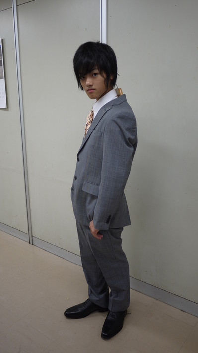

<<2012年8月 | トップページ | 2012年10月>>
2012年9月
【面白かった本】寺田朱里
やっほほのほほーい！にょほほーん！あかりだよーぅぅう！
今日はなんだかテンションがいつもより上がってるー！
私が一番印象に残った本はね！
「面倒くさがりやのあなたがうまくいく５５の法則」だよー！
ここ半年のうちに家にあったから読んだの！
「あっ！私のための本だ！」って思って運命感じたよー！
内容は５５の法則があってね！それについて詳しく書いてあったぁぁー。
んー、例えば「むずかしく考えない」とか！
「おー！ほぉ！」って共感しちゃーーーう！うふふ。
これで私も面倒くさがりや卒業しよーっと！
るんるるんるるーーーん♪ ぷっぶぶー。
あ、世界一テキパキしてくるねー！bye
投稿者:寺田朱里 | 投稿時間:18時00分 | カテゴリ：We are 大天才テレビジョン | 固定リンク


 " title="ソーシャルブックマークについて">
" title="ソーシャルブックマークについて">
※NHKサイトを離れます。
【面白かった本】延命杏咲実
こんにちは。延命で〜す！
さて、私がすきな本は「リボンちゃん」という本です。
この本は、きょ年、親せきのまきお姉ちゃんからゆずってもらい、読んでみたら、とてもおもしろくて何回も読んでます。
これは犬が出てくるお話です。
「リボンちゃん」とはその犬の名前です。
この本のないようは、「みな」という子がもうすぐたんじょう日で、たんじょう日プレゼントを子犬にする事にしました。
その家は犬が大すきで、色んな犬をかっています。
いよいよ、まちにまったたんじょう日！
そして、子犬がやってくる日！
みなと妹のあかりで決めた名前は「リボン」です。
そして「ロンくん」という犬とけっこん。
リボンのおなかに子犬が６ぴきもできました。
リボンのじんつうがいよいよはじまりました。
家族みんなでおうえんしました。
そしたら、みごとに６ぴき生まれました。
だけど、リボンは体の中にある水をはいて、子犬の命とひきかえに、死んでしまいました。
このページを見て私は「かわいそうだなぁ」と思いました。
でも、さいごまで、自分が弱っても子犬のそばにいて、ずっと子犬の事をほこりに思っていたリボンに私はぐっときました。
私は「命って大切なんだな」と強く思いました。
みなさんもこの本を読んで「命の大切さ」をあらためて思ってほしいです！
投稿者:延命杏咲実 | 投稿時間:18時00分 | カテゴリ：We are 大天才テレビジョン | 固定リンク
" title="ソーシャルブックマークについて">
※NHKサイトを離れます。
【夏休みの思い出】金子隼也
記者：金子さん、夏休みも終わってしまいましたが、どんな思い出がありますか？
金子：僕の夏休みの思い出は、家族で海に行ったことです。
記者：海水浴ですか？
金子：いつも行くその海では、岩ばでカニをつかまえたりします。
記者：泳がないんですね
金子：手作りのしかけをつくって、何がとれるかいつも楽しみです。
記者：カニじゃないんですか？
金子：今回はなんと！
記者：カニじゃないんですね？
金子：タコがつれました！（小さいタコですけど）
記者：カニでタコを釣る！
金子：ペットボトルの口が通れるなんてビックリです。
記者：ペットボトルを使うんですね
金子：ペットボトルの中にはすみが沢山入っていました。
記者：隅々まで
金子：最後は逃がしてあげました。
記者：上の図は金子さん直筆の『タコも捕まえられる仕掛けの図』です（クリックすると大きくなります）。みなさんも来年の夏、海でやってみましょう。
投稿者:金子隼也 | 投稿時間:18時00分 | カテゴリ：We are 大天才テレビジョン | 固定リンク
" title="ソーシャルブックマークについて">
※NHKサイトを離れます。
【夏休みの思い出】山田陶子
記者：山田さん、夏休みも終わってしまいましたが、どんな思い出がありますか？
山田：こんにちは！！
記者：はい、こんにちは。
山田：陶子デス！！じつは陶子なんです。
記者：えー山田陶子さんですね。知ってますよ。
山田：陶ーーーーー子！！
記者：ちょっと本題に入ってもらって良いですか？
山田：はい！！話します。
記者：はい、話して！
山田：夏休み中にできるようになった事。
記者：わかってます。
山田：そ ・ れ ・ は
記者：それは…
山田：自分でポニーテールができるようになったこと！！
記者：あら
山田：イェ〜イ！！
記者：イェ〜イ！！
山田：だてめつけてます（写真参照）。ではではさいなら！！
記者：えーそれだけ？？
ちなみに写真は自分で結んだポニーテールを披露している山田さんです。
投稿者:山田陶子 | 投稿時間:18時00分 | カテゴリ：We are 大天才テレビジョン | 固定リンク
" title="ソーシャルブックマークについて">
※NHKサイトを離れます。
【夏休みの思い出】浅賀玲音
記者：浅賀さん、夏休みも終わってしまいましたが、どんな思い出がありますか？
浅賀：今年の夏休みの思い出！
記者：そうです。
浅賀：宿題！宿題！宿題！
記者：×３ですね
浅賀：って感じだったけど
記者：そんなーいつも宿題やってるわけじゃないでしょ
浅賀：ゼェゼェ
記者：ゼェゼェなんて、呼吸が乱れてますよ。大丈夫ですか？
浅賀：一日だけかなり豪華な日があったのです！
記者：呼吸が乱れるのはやはりお体が細いせいでしょうか？
浅賀：それはですね...
記者：浅賀さん？
浅賀：旧てれび戦士の矢部昌暉くんと木島杏奈ちゃんに会ったのです！！わお！！
記者：旧じゃないですよ。２人とも北の国支局に異動したんですよ。
浅賀：午前は杏奈。（写真参照）
記者：そして…
浅賀：午後は昌暉という。（写真撮影）超豪華なのかい！！
記者：2人とも元気でなによりですね
浅賀：2人とも元気そうでなによりでしたねぇ。
記者：言いましたよ。
浅賀：皆さんも懐かしのお友達に会った人も多いかと思います！
記者：感想がおじいさんみたいですね
浅賀：また2人に会えるとイイナ！
記者：イイナイイナ人間ってイイナ
浅賀：ではさようならんらん
記者：ごきげんよう
投稿者:浅賀玲音 | 投稿時間:19時00分 | カテゴリ：We are 大天才テレビジョン | 固定リンク
" title="ソーシャルブックマークについて">
※NHKサイトを離れます。
【夏休みの思い出】鎮西寿々歌
記者：鎮西さん、夏休みも終わってしまいましたが、どんな思い出がありますか？ちなみに夏のイベントと、大！天才クエストはいろいろ思い出がありすぎると思うので、それ以外で。
寿々歌：「関西チーム」で集まったー！
記者：ほぉ
寿々歌：ななか、りんぱ、りょうき、うち！！
記者：ご存じない方のために解説しますと、かつてのてれび戦士で関西在住の脇菜々香さん、金子凜太朗さん、そして長江崚行さんと鎮西寿々歌さんですね。
寿々歌：ななかとりんぱ、変わってなかったです（笑）
記者：まぁ、劇的に変わっても恐いですが。
寿々歌：ななけるの今どきの平たいケータイカバーが、鼻の形してるんです（笑）
記者：急に呼び名がななけるになりましたが。
寿々歌：持ち方を一生懸命教えてくれました（＾ー＾）かわゆすのー♪
記者：え、それだけ…
寿々歌：また集まりたいですすすすすすー！！！★
記者：「す」っていっぱい書いて字数を稼ごうという作戦か！
寿々歌：さらんへよ〜（と言ってどこかへ消えてしまう）
記者：要約すると菜々香が寿々歌に携帯の持ち方を教えた、ってことだな
※ベスト１０（じゅう）ではてれびちゃんに敵対心むき出しの「待つわ」を歌ったお二人
投稿者:鎮西寿々歌 | 投稿時間:18時00分 | カテゴリ：We are 大天才テレビジョン | 固定リンク
" title="ソーシャルブックマークについて">
※NHKサイトを離れます。
【夏休みの思い出】ソーズビー航洋
記者：ソーズビーさん、夏休みも終わってしまいましたが、どんな思い出がありますか？ちなみに夏のイベントと、大！天才クエストはいろいろ思い出がありすぎると思うので、それ以外で。
ソーズビー：えっと・・・お母さんのともだちといとこと遊園地行きました。
記者：え、お母さんの友達といとこで？？？？？？？
ソーズビー：おばけ屋しきと絶叫系マシーンが一緒になったアトラクションが一番印象に残ってます！！
記者：お化け屋敷と絶叫系マシンが一緒になったアトラクションって？？？？？？？？？
ソーズビー：も−−−最初はゆっくり動くから、真横にいるゾンビがちょ−−−−−こわい！！んです！
記者：ちょっと状況がよくわからないんですけど
ソーズビー：ち−−−−まぢか（真近）！
記者：ち−−−−って何なんですか？
ソーズビー：悲鳴ずっとあげてました！！Ww
記者：Ww…？
ソーズビー：でもジェットコースター的には６０点！！
記者：で、それは結局ジェットコースターだったんですか？
ソーズビー：１回転するんですよ−−−−！！おもしろかったー（＾ー＾）
記者：６０点だったんでしょ？君の評価はどっちなんですか？
ソーズビー：ってことでKOYO.Sでしたー！！
記者：勝手にしめんなー
※で、ソーズビーさんが提供してくれたのは謎の絶叫マシンとはまったく関係のない島田が先日のブログ（http://www.nhk.or.jp/tvkun-blog/100/130302.html）で語っていた小６組の３人で遊んだときの写真…
ま、楽しそうで何よりですわ。
投稿者:ソーズビー航洋 | 投稿時間:18時00分 | カテゴリ：We are 大天才テレビジョン | 固定リンク
" title="ソーシャルブックマークについて">
※NHKサイトを離れます。
【乗りすけFile】 No.46：乗用管理機
乗りすけFile No.46：乗用管理機（９月１９日放送）
全長：3m29cm
全高：2m40cm
全幅：2m15cm
重量：1145kg
定員：1名
価格：504万円
田畑で農薬や水を散布、作物を管理する「乗用管理機」。どんな悪路も走破する、パワー抜群の4WD。
高い股下（８５cm）で作物を傷つけずに、またいで作業ができる。散布したい範囲にあわせて、伸縮自在のブームを展開。
５３個のノズルから一斉に農薬や水を散布。その量、毎分１００L。水平制御装置を搭載。車体が傾いてもブームは常に水平に保たれ、安定した散布が可能。ノズルを回すと散布される霧の形状が変化。
広い範囲を包み込むタイプ、狭い範囲にピンポイントで散布できるタイプ、強い風でも飛び散りにくいタイプなど、状況に応じて使い分けできる。
これまでの【乗りすけFile】はこちら
投稿者:大天才テレビジョン社員３号 | 投稿時間:18時42分 | カテゴリ：乗りすけさん | 固定リンク
" title="ソーシャルブックマークについて">
※NHKサイトを離れます。
【夏休みの思い出】竹原司
記者：竹原さん、夏休みも終わってしまいましたが、どんな思い出がありますか？ちなみに夏のイベントと、大！天才クエストはいろいろ思い出がありすぎると思うので、それ以外で。
竹原：こんにちは。
記者：こんにちは。
竹原：毎度おなじみ竹原司で〜す。
記者：毎度竹原さんのブログではありませんので。
竹原：今年の夏休みの思い出は、いとこの家に遊びに行った事です。
記者：いとこのおうちに？
竹原：いとこの家はずしにあって、海があって魚がおいしいです。
記者：ひらがなで書くとお寿司みたいですが、逗子ですね。神奈川県の。湘南の。
竹原：なので、いとこの家に行くと絶対にちょっとふとります（笑）
記者：いとこの家に行くのを理由にしてはいけません。
竹原：さてさて、いとこの家に行っておどろいたのが
記者：何でしょう
竹原：いとこの家のご近所さんがなんとマグロをつってきてさばいてごちそうしてくれました。
記者：マグロ！この後すぐ！！！
竹原：それがこちら。
記者：あら、もう写真をご用意してくださってる！！
竹原：すごいでしょ〜〜〜〜！
記者：これは本当にすごいですね。
竹原：いやー、おいしかったですよ〜。
記者：食べましたか！
竹原：ちなみに次の日はタコをつってきてくれました。
記者：ご近所さんは何者なんですか！？
竹原：やっぱり夏休みはサイコー！と思いました。
記者：それは充実した夏休みでしたね
竹原：ではさようなら。またこんどで〜す。
※マグロについて興奮気味に語る竹原司氏
投稿者:竹原司 | 投稿時間:18時00分 | カテゴリ：We are 大天才テレビジョン | 固定リンク
" title="ソーシャルブックマークについて">
※NHKサイトを離れます。
君の家のテレビの写真を送ってみないか
みなさんこんにちは。てれび戦士プロデュース室担当、通称「あなた」です。
大天才テレビジョン発のアイドルユニット「てれびちゃん」。いよいよ曲も出来て、プロデュース室一同、一安心しているところでした。
しかーーーーーし！
曲にはステキなＭＶ（ミュージックビデオ）が必要だということで、現在企画を進めています。
そこでプロデューサーのみなさんにお願いしたいことがあるんです。
身近にあるテレビの写真を撮って、プロデュース室に送ってほしいのです。
みなさんが送ってくれたいろんなテレビの写真を使って、ちょっとすごいことをＭＶの中でやりたいなと思っています。
たとえばこんな写真です。
→応募はこちらから
テレビ自体は少し小さくなっても良いです。テレビの周りがよくわかるような写真だとすごく嬉しいです。
ただし、ご注意。このような写真はダメなんです…
テレビの全体が見えない（テレビの四隅が写真に入るようにしてください）
テレビの電源がついている（テレビの電源はオフにした状態で写真を撮ってください）
→応募はこちらから
みなさんが撮った写真がないとてれびちゃんのＭＶは完成しません！
締め切りは今週末！どんどん送って下さいね！
投稿者:大天才テレビジョン社員２号 | 投稿時間:05時00分 | カテゴリ：てれび戦士プロデュース室 | 固定リンク
" title="ソーシャルブックマークについて">
※NHKサイトを離れます。
【大天才テレビショッピング】〜ハンガーＪＫ〜
「大天才テレビショッピング」９回目の放送はご覧いただけたでしょうか。
今回ご紹介したのは、大天才テレビジョン商品開発部が総力を挙げて開発した
「ハンガーＪＫ」です。


※モデル：長江崚行さん
詳細については、 「大天才テレビショッピング」のページ をご覧ください。
どうぞよろしくお願いいたします。
投稿者:大天才テレビジョン社員２号 | 投稿時間:18時46分 | カテゴリ：大天才テレビショッピング | 固定リンク
" title="ソーシャルブックマークについて">
※NHKサイトを離れます。
【夏休みの思い出】黒澤美澪奈
記者：黒澤さん、夏休みも終わってしまいましたが、どんな思い出がありますか？ちなみに夏のイベントと、大！天才クエストはいろいろ思い出がありすぎると思うので、それ以外で。
黒澤：みれなでーす( ＾ｖ＾) /
記者：はい、こんにちは。
黒澤：夏休みは、おばあちゃんと多摩川の花火大会に行きました！！
記者：あら花火ですか。いいですね。
黒澤：すごいバンバン！あがってすごかった〜！！
記者：とにかくすごかったんですねー
黒澤：ものすごい人で、すわる所をきめるのがたいへんだった〜！
記者：花火の会場は混雑するものです
黒澤：また行きたいなぁぁ〜！！
記者：行ってください。
記者：み、短い取材だった…
※往年のアイドルのような格好をした黒澤さん
投稿者:黒澤美澪奈 | 投稿時間:18時00分 | カテゴリ：We are 大天才テレビジョン | 固定リンク
" title="ソーシャルブックマークについて">
※NHKサイトを離れます。
【夏休みの思い出】岡田結実
記者：岡田さん、夏休みも終わってしまいましたが、どんな思い出がありますか？ちなみに夏のイベントと、大！天才クエストはいろいろ思い出がありすぎると思うので、それ以外で。
岡田：えっとまずこんちくわです(*´ ｀*)
記者：こんちくわ。このあいさつ好きですよね。
岡田：あと夏休み後５日まだ私は宿題がおわってないよーん！！！
記者：岡田さんはまだ夏休みなんですか〜
記者：あ、取材したのが夏休みの最後のほうだったんだ
岡田：助けてー(汗)
記者：相当ピンチみたいですね。
岡田：さてほんだいにもどって、
記者：冷静に仕切り始めたぞ
岡田：夏休み中に日光りんかん学校があったんですケド・・・
記者：日光？栃木県の。
岡田：その日光に行った私の親友がおみやげを買って来てくれたんです。
記者：そうか。岡田さんはイベントもろもろで行けなかったんですね。
岡田：「ゆいの分まで楽しんだよ！イベントがんばってね♪ 見に行くからねー！！」ってメールが来てて本当に私はいい友だちをもったなと思いました(*＾ｖ＾*)
記者：あら、これはイイ話。
岡田：これが私の夏のうれしいー楽しい思い出です！
記者：心あたたまる話でしたが、宿題はちゃんと終わったんでしょうか？
※岡田さん近影
投稿者:岡田結実 | 投稿時間:18時00分 | カテゴリ：We are 大天才テレビジョン | 固定リンク
" title="ソーシャルブックマークについて">
※NHKサイトを離れます。
【夏休みの思い出】長谷川ニイナ
記者：長谷川さん、夏休みも終わってしまいましたが、どんな思い出がありますか？ちなみに夏のイベントと、大！天才クエストはいろいろ思い出がありすぎると思うので、それ以外で。
長谷川：夏休みの思い出といえば・・・。
記者：はいはい
長谷川：お父さんと行った美術館！！！
記者：ずいぶん文化的ですね
長谷川：とっっっっても楽しかったです( ´∀｀)
記者：それはすてき
長谷川：午後は太陽サンサンでしたし！
記者：ま、美術館は室内でしょうけど、晴れてる方が良いですもんね
長谷川：でも行くとき、急に雨がふりだしてなんと嵐！！
記者：急展開！
長谷川：急いでかさを買ったら、やんでました・・・。ちょっとくやしい〜。
記者：まぁ、そんなこともあります
長谷川：でも、もうちょっと心の広い人になりたいと思います！！
記者：夏の一日、自分の来し方行く末を考える良い機会になったんですね
記者：ところでどんな美術館に行って、結局どうだったかは取材できず…
※すっかり秋の装いの長谷川氏近影
投稿者:長谷川ニイナ | 投稿時間:18時00分 | カテゴリ：We are 大天才テレビジョン | 固定リンク
" title="ソーシャルブックマークについて">
※NHKサイトを離れます。
【夏休みの思い出】寺田朱里
記者：寺田さん、夏休みも終わってしまいましたが、どんな思い出がありますか？ちなみに夏のイベントと、大！天才クエストはいろいろ思い出がありすぎると思うので、それ以外で。
寺田：あかりだぁぁぁぁぁぁぁぁぁぁぁぁぁぁぁぁ！！へっへへ。
記者：こんにちは
寺田：夏休み！おでかけに行ったの〜♪ とぅるるーん。
記者：とぅるるーんとはどういう意味なんでしょうか。
寺田：六本木ヒルズのありとあらゆる階段をかけのぼったよ！
記者：またおしゃれスポットに。
寺田：それをお姉ちゃんとお母さんが見守ってたの覚えてる！
記者：見守ってたのではなく、あきれていたのでは？
寺田：ふふふん。
記者：ものすごい切り返しですね。
※寺田さんの夏の思い出の場所、六本木ヒルズ
寺田：あとはね！タンクトップの背中の部分がペットボトルの水をふきかけたみたいにみずたまりができてたよ！
記者：それは、汗で、ということで良いんですね。
寺田：いやーん。
記者：ばかーん。
※寺田さんが水たまりをつくったという都内某所
寺田：夏は暑いよ！hahaha！
記者：寺田さんも相当あったまってますね。
記者：ちょっと会話にならなすぎるな…
※寺田さん近影
投稿者:寺田朱里 | 投稿時間:18時00分 | カテゴリ：We are 大天才テレビジョン | 固定リンク
" title="ソーシャルブックマークについて">
※NHKサイトを離れます。
【乗りすけFile】 No.45茶摘み機
乗りすけFile No.45：茶摘み機（９月１２日放送）

全長：2m70cm
全高：2m10cm
全幅：2m47cm
重量：約2000 kg
定員：1名
価格：約780万円
乗車して運転することで自動的に茶葉を摘み取る言わば「現代の茶摘み娘」。茶畑の畝幅と樹高に合わせて、門型の構造となっている。「股下」の高さは1m10cm、車両の横幅は伸縮可能だ。アーチ状の刃が左右に細かく動いて茶葉をカットする。刈り取られた茶葉は送風機を使ってコンテナに収納。摘み取り速度は分速20kg。走行部はクローラーを採用しており、その場での方向転換が可能だ。
これまでの【乗りすけFile】はこちら
投稿者:大天才テレビジョン社員２号 | 投稿時間:18時43分 | カテゴリ：乗りすけさん | 固定リンク
" title="ソーシャルブックマークについて">
※NHKサイトを離れます。
【夏休みの思い出】長江崚行
記者：長江さん、夏休みも終わってしまいましたが、どんな思い出がありますか？ちなみに夏のイベントと、大！天才クエストはいろいろ思い出がありすぎると思うので、それ以外で。
長江：夏休みの宿題が、ギリギリまで終わらなかったことです！
記者：それは学生の永遠の悩みですね
長江：いつもは計画的にやるんですが、今回はサボってて…
記者：いつもは計画的にやるんですね
長江：終わったと思ったら、やらなきゃいけないやつが出てきたり…
記者：まさか、それは言い訳ってやつでは…
長江：最後の一週間で終わらしました！
記者：それはすごいですね
長江：その時の集中力と言ったら…もう！(笑)
記者：もう！何なんですか？
長江：BGMを流してたけど、聞こえなかった！聞かなかった！
記者：じゃあなんで流してたんですか？
長江：なぜ流した！って感じなんだけどね
記者：いや、言いましたよ私が。
長江：(笑)
記者：笑ってごまかさないでください！
長江：来年は、早めにやっちゃおう…
記者：来年は中学３年ですから
長江：でもなんだかんだで最後にやるんだろうなぁ…(笑)
記者：だから笑ってごまかさないで下さい
長江：崚行でしたー（と言ってダンスを始める）
記者：ま、宿題が終わって何よりです。
※夏休み外にあまり行けなかったという長江さんが撮影した「空」
投稿者:長江崚行 | 投稿時間:18時00分 | カテゴリ：We are 大天才テレビジョン | 固定リンク
" title="ソーシャルブックマークについて">
※NHKサイトを離れます。
【夏休みの思い出】延命杏咲実
記者：延命さん、夏休みも終わってしまいましたが、どんな思い出がありますか？ちなみに夏のイベントと、大！天才クエストはいろいろ思い出がありすぎると思うので、それ以外で。
延命：えんめいです（＾０＾）
記者：知ってます
延命：さて、わたしの夏休み思い出は、いとこの家にとまりに行った事です☆
記者：ほう
延命：や〜楽しかった！
記者：や〜って…
延命：とまりに行った１日目はいとこ２人といとこのおかあさんと（私のおかあさんのお姉さん）わたしのおかあさんとじぶんで花火大会をしました。
記者：ずいぶん複雑ですね
延命：とてもきれいで楽しかったです。
記者：花火はきれいですからね
延命：２日目は水でふくらむビーズをプールに入れて、けいかをまちました。
記者：経過を待ったんですね
延命：ちょくちょくプールを見てみると、大きくなってました。
記者：ほう
延命：３日目はさいごの日でした。
記者：ビーズの話しは終わりですか
延命：わたしは、いとこといとこのともだちといっしょにドッジボールであそびました。
記者：dodge ballですね。私も小さい頃は小学校の休み時間にやりましたよ
延命：帰る時になったら、いとこもわたしもかなしんでいました。
記者：ドッジボールの話しは終わりなんですね
延命：さいごにいっしょに写真をとりました！
記者：よかったですね
延命：また、いとこの家にとまりたいです！！
記者：とまってください
記者：ずいぶんマイペースな方だったな…
※デスクワークに余念のない延命氏 （昔の写真）
投稿者:延命杏咲実 | 投稿時間:18時00分 | カテゴリ：We are 大天才テレビジョン | 固定リンク
" title="ソーシャルブックマークについて">
※NHKサイトを離れます。
【夏休みの思い出】島田太一
記者：島田さん、夏休みも終わってしまいましたが、どんな思い出がありますか？ちなみに夏のイベントと、大！天才クエストはいろいろ思い出がありすぎると思うので、それ以外で。
島田：ズッさんと結実と色々な所に遊びに行きました。
記者：色々とは？
島田：ボウリングや花火などでたくさんあそびましたけど、一番楽しかったのは３人で水かけまくってビショビショになったコトです。
記者：で？
島田：みんなでかわかすのが大変でした（T_T)
記者：あ、そうですか…
島田：（用事が出来たのかどこかへ行ってしまう…）
記者：まったく内容のない取材だったな。とりあえず今日からはてれび戦士のみんなの夏休みのエピソードを聞いていくとするか。
写真：島田さんによく似た方が廊下を歩いていました
投稿者:島田太一 | 投稿時間:18時00分 | カテゴリ：We are 大天才テレビジョン | 固定リンク
" title="ソーシャルブックマークについて">
※NHKサイトを離れます。
【MTK】「世界のからくりと僕のゆびさき」
9/3に放送が始まった浅賀玲音ソロのMTK「世界のからくりと僕のゆびさき」。作詞・作曲・編曲は、元Cymbalsのメンバー、現在バンドScott Goes Forなどで活躍している沖井礼二さんです。
テーマは青春のいらだちと栄光。沖井さん自身が中学生だった頃のことを思い出しながら言葉を綴ってくれました。ちょっと難しい単語や漢字をあえて使ったりもしています。ドラムとベースが暴れまわる疾走感あるバンド・サウンドと合わせて、ちょっと男っぽい、浅賀玲音の新しい面を引き出してくれたと思います。
レコーディング・スタジオにて沖井礼二さんと。
映像は浅賀玲音が走る、走る、とにかく走る。都会の裏道に人ごみの横断歩道、歩道橋に公園にトンネル――。
本人が本気で走って撮影しています。
ラストシーンのロケは砂浜で行われました。夕焼けの一瞬を狙っての撮影、すばらしい天気に恵まれました。映像では浅賀くんが海に入っていますが、これはミュージックビデオ上の演出なので、皆さんは真似をなさらないようお願いします。念のため。

投稿者:大天才テレビジョン音楽制作部 | 投稿時間:19時00分 | カテゴリ：お知らせ！ | 固定リンク
" title="ソーシャルブックマークについて">
※NHKサイトを離れます。
【速報・大！天才クエストU ＳＴＡＧＥ３】
大天才テレビジョン・広報のもっちーです！
皆さん、今日の放送はご覧いただけましたか？
「大！天才クエストU」ＳＴＡＧＥ３【大魔王ランド】での戦いの結果、
勝者は、まさかまさかの大逆転で、あきえチームに決定しました！
おめでとうございます〜！！
あすの大！木曜ＬＩＶＥでは、リゾート地から、大！生中継を敢行する模様です！
皆さん、お見逃しなく♪♪
（…いいなぁ、私も行きたいなあ。）
投稿者:もっちー＠大天才テレビジョン広報室 | 投稿時間:18時54分 | カテゴリ：お知らせ！ | 固定リンク
" title="ソーシャルブックマークについて">
※NHKサイトを離れます。
【速報・大！天才クエストU ＳＴＡＧＥ２】
大天才テレビジョン・広報のもっちーです！
出川チームとあきえチームが、リゾートご招待券をかけてバトルを繰り広げている
「大！天才クエストU」ＳＴＡＧＥ２【大魔王の森】での戦いの結果は、この通り！
出川チームが手に入れたのは「復活スイカ」「スリッパ」「マジックハンド」「宝の地図（４枚）」。
あきえチームが手に入れたのは「脚立」「無敵のブローチ」「魔法の杖」「時空ストップウォッチ」「宝の地図（１枚）」。
宝の地図の数が多いのは出川チームですが、
魔法アイテムをたくさん手に入れたあきえチームが、どこまでうまく戦いを進められるのかが、
最終決戦の勝敗を左右しそうです！
明日のＳＴＡＧＥ３もお見逃しなく！
投稿者:もっちー＠大天才テレビジョン広報室 | 投稿時間:18時54分 | カテゴリ：お知らせ！ | 固定リンク
" title="ソーシャルブックマークについて">
※NHKサイトを離れます。
【速報・大！天才クエストU ＳＴＡＧＥ１】
大天才テレビジョン・広報のもっちーです！
出川チームとあきえチームが、リゾートご招待券をかけてバトルを繰り広げている
「大！天才クエストU」ＳＴＡＧＥ１【大魔王の森】での戦いの結果は、この通り！

両者一歩も譲らぬ大接戦となっております！
古坂大魔王からリゾートご招待券を取り返すことができるのは、どちらのチームになるのか？
明日ＳＴＡＧＥ２もお見逃しなく！
投稿者:もっちー＠大天才テレビジョン広報室 | 投稿時間:18時54分 | カテゴリ：お知らせ！ | 固定リンク
" title="ソーシャルブックマークについて">
※NHKサイトを離れます。
【ドウブツカメラ！】虎（撮影：崚行・寿々歌）
９月３日（月）「被写体…虎」
今回の動物カメラマンは、長江崚行と鎮西寿々歌。
２人が撮ったベストショットはこちら！
※画像をクリックで大きな画像が開きます。
開いた画像を右クリックで画像を保存できます。
撮影：長江崚行『これからの阪神タイガース』

撮影：鎮西寿々歌『こどもだからって甘くみるんじゃねーぞ』
ロケ中の２人のオフショットはこちら！
投稿者:大天才テレビジョン社員２号 | 投稿時間:18時44分 | カテゴリ：ドウブツカメラ！ | 固定リンク
" title="ソーシャルブックマークについて">
※NHKサイトを離れます。
大天才テレビジョンに緊急事態発生！
皆さん、お久しぶりです！
大天才テレビジョン・広報のもっちーです！！
実は８月、大変なことが起きたんです！
古坂大魔王が、大天才テレビジョンの局内に乱入してきて…
「大！天才てれびくん・夏の特別企画」をジャックしちゃったんです！
（夢だった番組ジャックを果たして、ちょっと得意げな古坂大魔王）
（と、その子分・鬼ドーナ）
大天才テレビジョンの社員たちは、突然の古坂大魔王の襲来に対応しきれず…
いま局内は大変な混乱状態にあります（焦）
何が起こったのかは、来週月曜から４日連続放送の
「大！天才クエストU 〜古坂大魔王からの挑戦状〜」をご覧ください！
お楽しみに！
投稿者:もっちー＠大天才テレビジョン広報室 | 投稿時間:00時00分 | カテゴリ：お知らせ！ | 固定リンク
" title="ソーシャルブックマークについて">
※NHKサイトを離れます。
【てれび戦士プロデュース室】いよいよ再始動！
みなさんお元気でしょうか？
長い夏休みもそろそろ終わり。てれび戦士プロデュース室も再始動いたします。
９月６日（木）の放送では、全国のプロデューサーのみなさんに募集をしていた、てれびちゃんのデビュー曲
「公共電波にのっかって」の歌詞が遂に完成。いよいよその全貌が明らかに！！
そして…
あれは、てれびちゃん、だよね？？
投稿者:大天才テレビジョン社員３号 | 投稿時間:16時00分 | カテゴリ：てれび戦士プロデュース室 | 固定リンク
" title="ソーシャルブックマークについて">
※NHKサイトを離れます。
ページの一番上へ▲